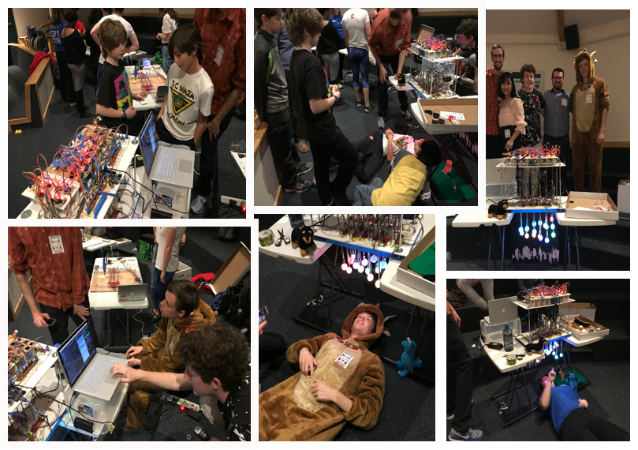
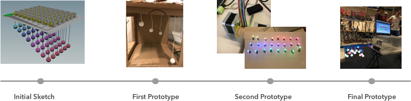

STARSTRUCK
A Kinetic Light Display
ABOUT
Starstruck is a kinetic display featuring 18 hanging lights whose position and color can be interactively animated. The goal for this project is to motivate children’s interest into the intersection of art and technology. The piece consists of a grid of 18 suspended, LED-illuminated ping pong balls that are raised and lowered independently by 18 stepper motors. The piece can be programmed to create different patterns using both color and motion. The installation is controlled by Arduino Mega and Arduino-Houdini interface.
{kind=link}
{kind=link}
{kind=link}
{kind=link}
We presented our design in Ithaca Science Center. Children really like it!
PROCESS
The key concept of the design process is iteration. The project is devided into four different parts: structure and physical motion, animation, lighting system, motor system. Every component was tested and modfied in every step of the iteration.
Motor System
In our final prototype, we wired the stepper motors in groups of six. We used a step pin and a direction pin for each motor, totalling 36 pins. We ran into power issues during initial assembly but, using voltmeters to extrapolate power demand, we found our display requires 10A and ordered a 15A power supply accordingly.
{kind=link}
{kind=link}
Lighting System
In our initial implementation, we used a digitally-controllable strand of LEDs, which allowed 24 LEDs to be controlled with 2 pins. Each RGB LED had a controller chip inside it which allowed us to control the LEDs independently with a single 4 conductor cable using an internal 8-bit PWM LED driver. The light system remained functionally the same throughout our design process to the final implementation. For our final prototype, we had to individually solder 24 LEDs.
{kind=link}
{kind=link}